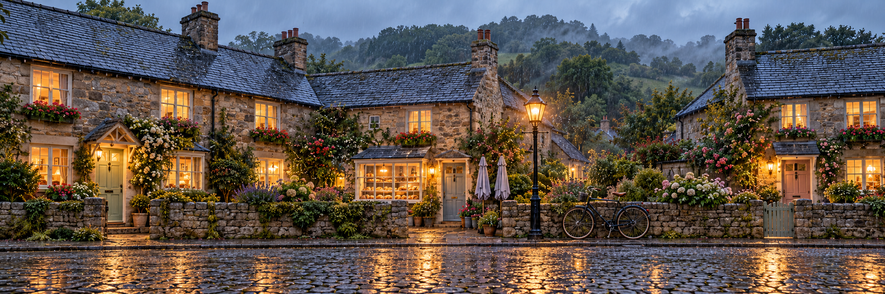
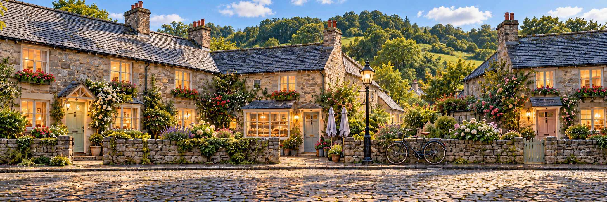
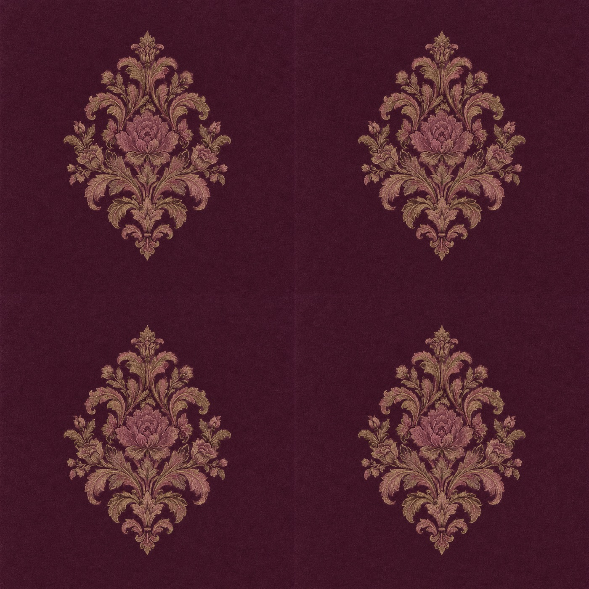

01 · Main room concept. Click any image to open its full-resolution PNG.
The room, its objects & flat artwork
The written room layout and dedicated wall/prop views govern the Blender build. Keep one lectern at the rear shelves; ignore its incidental cabinet-side glimpse in the main view. These concepts are not registered panorama faces.
One lane, ten moments
The same wide village backdrop for Sweet Spells and Chiapothecary. Compare any two views by fading between them or switching on flicker.


All canvases are 2172 × 724 (3:1). Seven fixed-feature patches were measured: reliable matches differ by 0–2 pixels. Weather and illumination alter fine detail; this is not a claim of pixel-identical images. Alignment report.
The velvet repeat

Complete medallions avoid cut-motif joins. The 2 × 2 repeat was visually checked; the fine velvet microtexture is not mathematically periodic. Repeat checks.